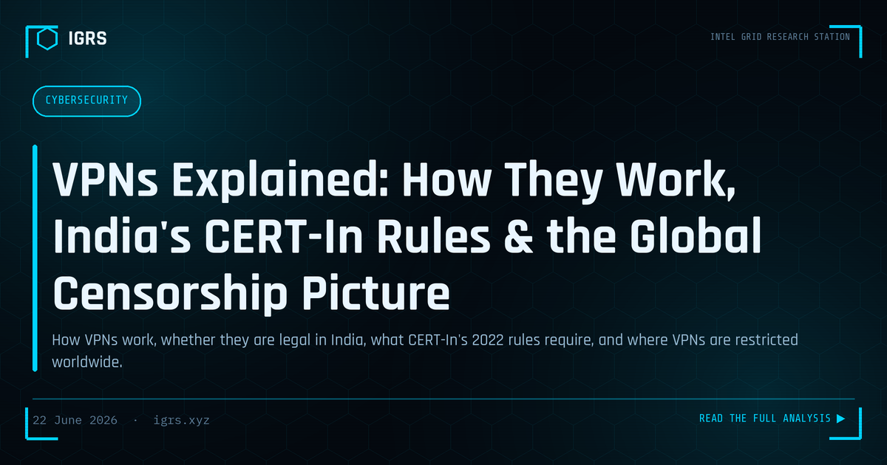
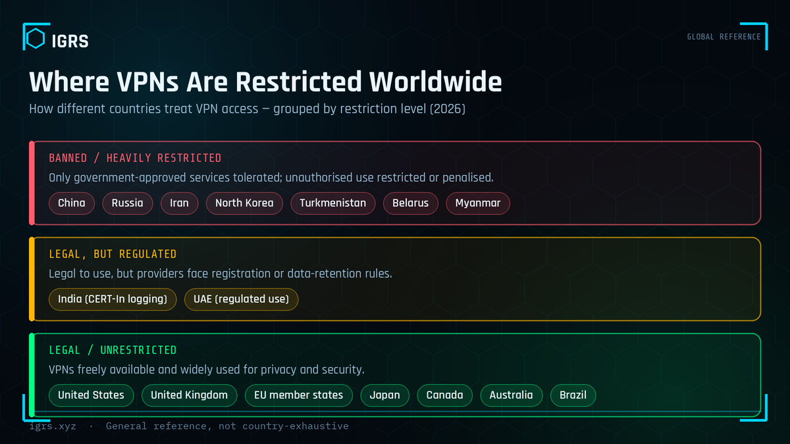

VPNs Explained: How They Work, India's CERT-In Rules & the Global Censorship Picture
The letters “VPN” turn up everywhere — in privacy ads, office IT policies, and news stories about internet shutdowns. For something so widely discussed, what a VPN actually does is often misunderstood, and the rules around it differ sharply from one country to the next. This is a plain-English guide: what a VPN is, how it works, whether it is legal in India and what the CERT-In rules mean for you, and where VPNs sit on the world map of internet freedom — no marketing, no jargon.
What a VPN actually is
A Virtual Private Network creates an encrypted “tunnel” between your device and a server run by the VPN provider. Your internet traffic travels inside that tunnel, so your network operator sees that you are connected to a VPN but not the individual sites you visit, and the websites you reach see the VPN server's address instead of yours. In short, a VPN does two things: it encrypts your traffic on the path to the VPN server, and it masks your real IP address behind the server's.
What a VPN does not do is make you anonymous or untouchable. Your VPN provider can still see your traffic at the point where it exits the tunnel, which is why who runs the VPN, and what they log, matters more than the technology itself. A free VPN with a weak privacy record can be worse for you than no VPN at all.
Are VPNs legal in India?
Yes — using a VPN in India is legal, and there is no ban. What changed is the compliance burden on providers. On 28 April 2022, India's Computer Emergency Response Team (CERT-In) issued a directive under Section 70B of the IT Act, 2000 that placed significant data obligations on VPN providers, data centres, cloud and virtual-private-server operators. The headline requirements:
- Five-year data retention. Providers must register and keep validated subscriber details — name, validated address, email, allotted IP addresses, the purpose of use — for at least five years, even after an account is closed.
- 180-day logs. ICT system logs must be maintained within India for a rolling 180 days.
- Six-hour incident reporting. Covered entities must report cyber incidents to CERT-In within six hours of noticing them — among the strictest timelines in the world.
- Clock synchronisation. Systems must sync to Indian government NTP time sources (NIC / NPL) so timestamps line up across investigations.
The stated aim was to strengthen cyber-incident investigation. The friction is obvious: these rules sit awkwardly with the “no-logs” promise that privacy VPNs are built on. The result was that several well-known providers — including ExpressVPN, NordVPN, Surfshark and Proton — pulled their physical servers out of India and now offer Indian IP addresses through virtual servers hosted abroad, placing them outside direct enforcement.
What the rules mean for an ordinary user
If your VPN keeps physical servers in India and complies, assume your identity and usage can be logged and produced to authorities on request. If your provider uses virtual Indian servers hosted abroad, the data-retention reach is weaker. Either way, two things stay true. First, the VPN is legal; the conduct is what counts — using a VPN to hack, defraud, harass or access court-restricted material remains an offence under the IT Act and the Bharatiya Nyaya Sanhita, 2023. Second, a large store of identity and browsing data is itself a target: if a provider is breached, that trove can fuel exactly the kind of impersonation and scam calls India is already fighting. Choose a reputable, audited provider and understand its logging posture.
India vs the world: the incident-reporting clock
One way to see how far India's framework leans toward investigation is the reporting deadline. India gives organisations six hours; the EU's GDPR allows up to 72, and the United States' CIRCIA framework also works on a 72-hour basis for covered entities.
The global picture: where VPNs are restricted
India regulates VPNs but does not ban them. Elsewhere, the spectrum runs from completely free to effectively prohibited. In a number of countries, only government-approved VPNs are tolerated and unauthorised use is restricted or penalised — commonly cited examples include China, Russia, Iran, North Korea, Turkmenistan, Belarus and Myanmar. In most of the world, VPNs remain legal, with a smaller group of states — India among them — attaching data-retention or registration conditions.

The bottom line
A VPN is a useful privacy and security tool, not a magic cloak. It encrypts your traffic and hides your IP, but its real value depends on the provider's trustworthiness and logging. In India it is fully legal, wrapped in some of the strictest data and reporting rules anywhere; around the world its status is a fair barometer of how open a country's internet is. Use one deliberately: pick a reputable provider, know what it logs, and remember that the tool's legality never excuses unlawful use.